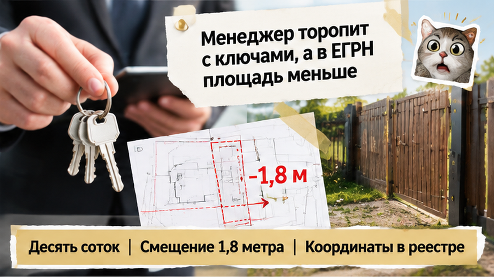
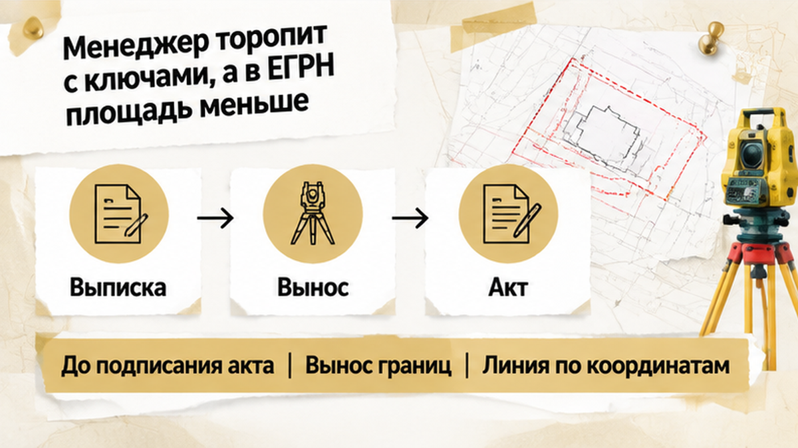
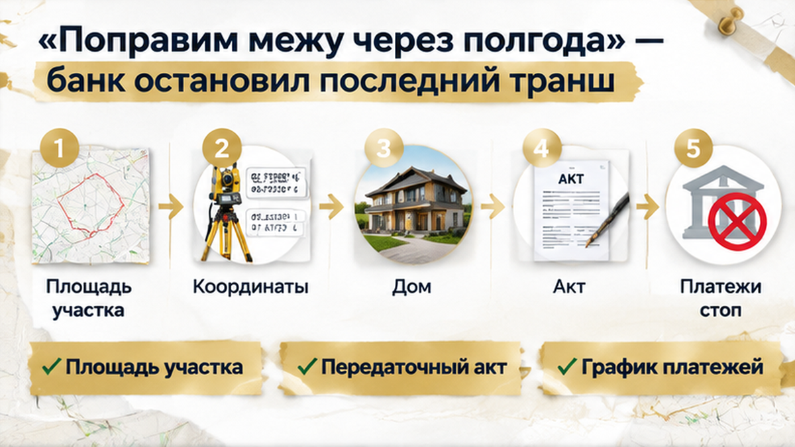

Под Тюменью коттедж не приняли: забор ушёл от кадастровой границы на 1,8 метра, и семья отказалась подписывать передаточный акт. Дом уже стоял, менеджер показывал ключи, а в документах участок выглядел ровным и понятным. На земле линия ограждения не совпала с данными ЕГРН. Расскажу, как мы проверяли объект за два часа до приёмки и почему «потом поправим» здесь не сработало.
Если принимаете дом или квартиру в Тюмени, подписывайтесь на Telegram и MAX. Там разбираю сделки до момента, когда ошибка превращается в ваши расходы.
В буклете коттеджного посёлка всё выглядело привычно: десять соток, готовый дом, благоустройство, можно забирать ключи. Семья приехала без желания спорить — хотела проверить инженерные системы и подписать документы.
На участке их встретили менеджер, инженер и стол с актами. Забор выглядел обычным, как у соседей. Но для человека без приборов разница между проектной линией и фактической часто незаметна.
Кадастровая граница определяется координатами, а не тем, где примерно поставили столбы. Инженер сначала проверил документы, затем сопоставил данные ЕГРН с местностью. Первые точки совпали, но дальше линия ушла в сторону забора. В одном месте расхождение составило 1,8 метра.

Покупатель может подумать: «Забор же можно переставить». Но забор сам по себе границу не устанавливает. Важно понять, совпадает ли передаваемый объект с тем, что указано в договоре и зарегистрировано в ЕГРН.
Менеджер объяснил, что вопрос решаемый: ограждение, возможно, перенесут или границу уточнят. Но устное «разберёмся позже» не отвечало на главный вопрос семьи. Дом может быть аккуратным, коммуникации — работать, фасад — выглядеть готовым, а земельная часть всё равно не соответствовать документам.
Инженер приехал до подписания акта. Пока документ не подписан, семья могла задать вопросы и зафиксировать несоответствие в претензии. После подписи продавец обычно считает объект переданным, и покупателю приходится отдельно доказывать серьёзность нарушения.
Проверка началась не с рулетки у калитки. Инженер изучил координаты участка, установил оборудование, определил исходные точки и перенёс их на местность. Так появилась не примерная, а фактическая линия границы.
На участке всё уже казалось сформированным: дом, дорожка, ворота, соседские ограждения. Но именно в таких местах визуальная картина может расходиться с юридической. Мы прошли по нескольким точкам и сравнили линию с забором. Прибор показал смещение.

1,8 метра — не отвлечённая цифра из отчёта. На земле это полоса вдоль границы, которая может затрагивать ворота, дорожку, хозяйственные постройки или соседнюю территорию.
На вопрос «разве нельзя просто оформить как есть?» одного обещания на участке недостаточно. Нужно понимать, на каком основании меняются границы, кто подаёт документы, согласны ли затронутые собственники и что будет с зарегистрированной площадью.
Мы отдельно сверили забор, сведения ЕГРН и описание участка в договоре. Инженер показал положение границ и зафиксировал измерения, но не решал за семью, подписывать акт или нет. Юридическое решение оставалось за покупателями.
Пока шла проверка, менеджер возвращался к теме ключей: дом готов, значит, казалось логичным завершить приёмку в тот же день. Но готовность дома не отменяет обязанность передать именно тот объект, который указан в документах.
В офисе менеджер говорил буднично: «Дом готов, осталось подписать акт». Для покупателя это звучит логично: деньги внесены, коттедж построен, впереди переезд. Но вместе с домом он принимает и участок, на котором тот стоит.
В ЕГРН площадь оказалась меньше той, о которой говорили в буклете и на встречах. На земле это проявилось смещённым забором: он не совпадал с кадастровой линией примерно на 1,8 метра.
Менеджер предлагал не заострять внимание: «Это технический вопрос, поправим позже». Но акт приёма-передачи фиксирует результат, а не обещание. После подписи доказать, что именно передали покупателю, сложнее.
Площадь в объявлении, договоре и ЕГРН — разные сведения. Их нужно сопоставить до подписи. Если застройщик обещает исправления, важно письменно указать, что именно исправляют, кто отвечает и в какой срок.
Такие обещания не заменяют проверку. В другой истории покупателю обещали чистовую отделку, а на приёмке оказались голые стены — акт не подписали до устранения расхождений. Здесь логика та же: сначала сверка предмета сделки, затем подпись.
На участке семья не стала спорить на эмоциях. Рядом работал кадастровый инженер, а забор показывал расхождение с документами. Передаточный акт они не подписали и попросили оформить претензию.
Устно сказать «нас не устраивает граница» — одно. Письменно описать несоответствие, указать проверенные документы и требования — другое.
Менеджер настаивал на выдаче ключей. Семья ответила, что готова обсуждать передачу после того, как станет ясно, какой участок фактически передают и как он связан с данными ЕГРН. Это не отказ от покупки, а фиксация проблемы до её решения.
Я бы не советовал подписывать акт «с замечаниями», если замечание касается самой границы или площади. Такой документ может выглядеть компромиссом, но затем застройщик получит подтверждение передачи, а покупателю придётся отдельно доказывать, что существенное расхождение осталось.
Ключи не заменяют документы. Дом можно осмотреть и отдельно записать недостатки, но по участку нужно зафиксировать границу, площадь в реестре и обязательства застройщика. Несколько часов на это дешевле, чем потом доказывать исходное несоответствие.
Если в сделке участвует банк, последствия жёстче: кредитору нужен юридически определённый объект залога. В похожих историях проблемы с документами приводили к остановке финансирования — например, второй транш не выдали после сдачи новостройки без разрешения на ввод: банк остановил следующий этап.
Поэтому претензия в день приёмки — не лишняя бумага. Она фиксирует позицию семьи до того, как желание получить ключи вытеснит проверку участка.
На столе лежали акт приёма-передачи, заключение кадастрового инженера и схема участка. По схеме было видно: забор стоит не там, где проходит граница в ЕГРН. Сдвиг составил 1,8 метра.
Менеджер говорил спокойно:
«Мы всё поправим. Дайте полгода».
Для семьи это звучало как предложение забрать ключи сейчас, а спор с границей оставить на потом. Но дом нужно было принять, подписать документы и завершить расчёты. Стены, окна и коммуникации были готовы, однако по документам покупатель получал участок с одной конфигурацией, а на земле видел другую.
Обещание исправить границу позже не заменяет результата. Может измениться позиция застройщика, возникнуть спор с соседями или потребоваться новые согласования.
Семья не стала подписывать акт. Это не означало отказ от дома: передаточный документ нельзя было подписывать до устранения несоответствия и фиксации позиции застройщика.
Здесь возникла и банковская проблема. Последний транш завис: кредитор не готов был завершать расчёты, пока объект и земельный участок не соответствуют документам. Это уже вопрос денег, регистрации и ответственности за то, что будет передано по акту.
Если получить ключи, а потом обнаружить проблему, переговорная позиция слабее: объект фактически принят. Поэтому землю и документы проверяют до подписи, а не после неё.
Такая осторожность важна и в других ситуациях: когда ключи переносят, а деньги на эскроу остаются замороженными, или когда ипотеку одобрили, а эскроу не открыли — каждый этап цепочки нужно сверять с документами до подписи.
Застройщик обещает исправить границы за свой счёт через полгода: принять готовый дом или отказаться от ключей, пока юридически не определён участок, за который вы платите?

На приёмку нужна не только камера телефона, но и папка с документами. Сначала сверяем бумаги, затем дом, участок и границы на местности.
| Что проверить | С чем сравнить | Что фиксировать |
|---|---|---|
| Площадь участка | ЕГРН, договор, приложение со схемой | Расхождение в квадратных метрах и формулировки в акте |
| Границы участка | Кадастровые координаты и вынос точек инженером | Положение забора, ворот, отмостки и других объектов |
| Дом | Договор, проектная и техническая документация | Площадь, адрес, этажность, состав помещений |
| Коммуникации | Условия договора и технические документы | Фактическое подключение, приборы учёта, работоспособность |
| Передаточный акт | Фактическое состояние объекта | Каждый недостаток, срок устранения и ответственное лицо |
| Расчёты | График платежей и требования банка | Условие перечисления последнего транша |
Забор не доказывает юридическую границу. Его могли поставить по старой схеме, по договорённости с соседом или с ошибкой. Поэтому кадастровый инженер выносит точки на местность, а не оценивает линию «на глаз».
Если забор ушёл от кадастровой линии, фразы «стороны претензий не имеют» недостаточно. В акте или отдельной претензии нужно указать, где проходит граница по документам, где стоит ограждение, в чём расхождение и что обязан сделать застройщик.
Документы ЕГРН, договор, схему участка и требования банка сверяют до приёмки. На месте сопоставляют точки с забором и фактическим пользованием, осматривают дом и коммуникации, а замечания вносят в акт или оформляют отдельной претензией. Банку передают документы и получают подтверждение, что расчёты могут быть завершены.
Претензия должна быть рабочей: конкретное расхождение, схема и заключение инженера, требование устранить нарушение и срок ответа. Если исправление обещают позже, письменно закрепляют, что именно меняется, кто оплачивает работы и какой документ подтвердит результат.
На приёмку в коттеджном посёлке лучше приходить до подписания акта и получения ключей. После подписи спор превращается из проверки объекта в доказательство того, что покупатель уже принял его с недостатками.
В моей практике проверка начинается до приёмки: мы смотрим договор, выписку, схему участка, требования банка и только потом едем на объект. Так семья понимает, что принимает, за что платит и какие замечания нужно зафиксировать.
Разбираю такие вопросы до подписи, а не после устного «потом поправим». Продолжение разборов домов и новостроек Тюмени — в Telegram и MAX.
Семья в этой истории не подписала акт в день приёмки. Сначала зафиксировали расхождение, подключили кадастрового инженера и остановили завершение расчётов до выяснения ситуации. Это не отказ от покупки, а нормальная процедура, когда документы и земля говорят разное.
Дома от застройщика под Тюменью можно покупать спокойно, если землю проверять до ключей, а готовность стен не путать с готовностью участка к передаче.